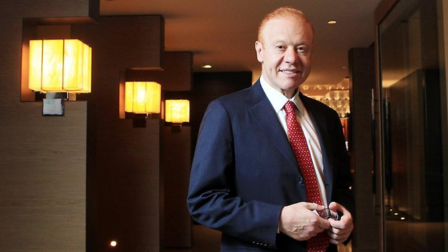

Anthony Joseph Pratt is an Australian businessman and billionaire, he is the executive chairman of Visy Industries and Pratt Industries in America which is the world’s largest privately owned packaging and paper company. Anthony Pratt Together with his family, they have an estimated net work of A$12.90 billion.
He was born on April 11th 1960, 58 years old now as of 2018. Anthony is estimated to have a net worth of USD 7.3 billion as of 2019.
He is married to Claudine Revere and they have children Leon Pratt and Lilly Pratt. Anthony Pratt is a son to Richard Pratt and Jeanne Pratt. He is a brother to Heloise Waislitz, Fiona Geminder.
He graduated from Monash University, Melbourne, with a Bachelor of Economics (Hons) in 1982.
Anthony joined McKinsey and Co, an administration counseling firm, in 1982 preceding joining Visy as joint General Supervisor of its board. In 1988, he moved toward becoming Representative Director of Visy Enterprises. After three years, he moved to the United States to lead the organization’s development there.
Throughout the following 15 years, Pratt Ventures grew 15-crease in deals and income, through greenfield activities and the obtaining of a few ridged assembling organizations that presently structure the core of Pratt Businesses.
Organization incomes developed from US$100 million of every 1991; and by 2016 income was US$3 billion. Amid that time, Pratt Enterprises developed from the 46th biggest layered box maker in the U.S. to the fifth biggest.
It is the main significant paper compartment board organization that is 100 percent reused. In 2013, at that point New York City hall leader Michael Bloomberg gave Pratt a decree announcing September 17, 2013, Pratt Businesses Day.
In 2016, Pratt was granted the RISI North American Bundling President of the Year Grant. That equivalent year, Pratt opened a 100% reused paper factory close Chicago, adding about US$1 billion to his riches.
It was authoritatively opened by then-Representative Mike Pence. In Walk, 2017, Pratt opened his 68th industrial facility, a crate making plant, with Wisconsin Senator Scott Walker in Beloit.
On May fourth, 2017, Pratt vowed within the sight of President Donald Trump to contribute $2 billion to make 5,000 lucrative assembling employments more than 10 years essentially in the Midwest.
In August 2017, within the sight of Australian Leader Malcolm Turnbull, Pratt made a further venture promise of A$2 billion in Visy Australia to make 5,000 Australian assembling employments. That equivalent week Pratt, vowed to give away A$1 billion to philanthropy before he kicks the bucket.
Despite the fact that Pratt remains Administrator of the American arm of the family’s bundling business, he came back to Australia to assume control as Official Executive of Visy following the demise of his dad, Richard, in 2009. Visy’s corporate notoriety record positioning went from #43 to #3 somewhere in the range of 2009 and 2011